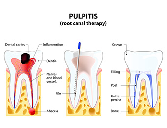
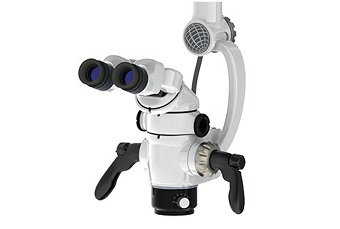
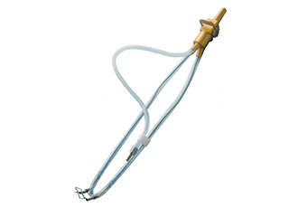
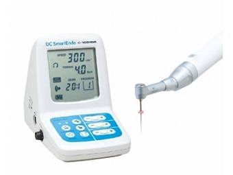
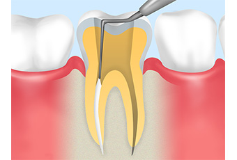
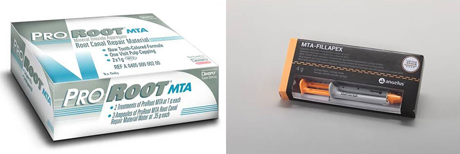
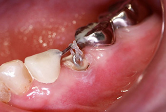
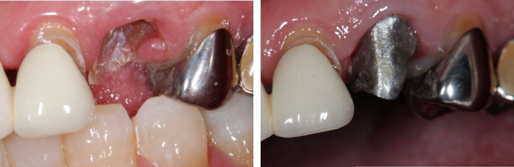

- ホーム
- 根管治療
天王寺まつい総合歯科の根管治療
根管治療とは

根管治療とは、歯の根っこに対する処置で、当初は重症化した虫歯に適応されることが多いです。歯の根っこの中には「根管（こんかん）」と呼ばれる空洞があり、その中には歯の神経や血管などが走行しています。
重症化した虫歯では、歯の神経や血管が細菌によって侵されているので、これらをきれいに取り除く必要があるのです。汚染された組織を除去し、さらに根管内を清掃、減菌、閉鎖（細菌が繁殖しないように）するのが根管治療の目的です。
根管治療が難しい理由
根管治療は、歯科治療の中でも難しい部類に入ります。保険診療の再治療率は50％前後といわれており、その数値の高さから治療の難易度が想像できるかと思います。根管治療が難しい理由は、以下の4つです。
- 根管は非常に細くて複雑で多種多様な形態をしている
- 根管内は暗く、肉眼ではなかなか奥まで確認できない
- 根管は傷付きやすい
- 少量でも汚れの取り残しがあると再感染を引き起こす可能性がある
当院の根管治療
根管治療を成功へと導くためには、精度の高い処置を施す必要があります。当院では、以下の3点に力を入れ、精密な根管治療を実践しております。
- 可視化

根管内は、肉眼で確認することが困難な組織なので、いかに「可視化」するかが治療成功のカギを握ります。拡大鏡やマイクロを用いて、視野を拡大することはもちろんのこと、必要に応じてCT撮影も行います。CTによって得られる画像は、3次元的な情報であるため、根管の太さや数や深さだけでなく、形態や性状まで把握することができます。
- 減菌

根管治療の成否は、根管内を無菌化に近づけるかどうかにかかっています。そこで当院では、根管内を洗浄する際には、「ルーティー」や「ジロソニック」といった最新の器具を採用しております。また、術野の汚染防止に「Zoo(ズー)」を利用し、細菌感染のリスクを低減しております。Zoo(ズー)は、数秒で装着できる小型の防湿装置で、歯の破折や痛みを伴いやすいラバーダムに比べ患者さまへの負担も非常に軽くなっています。防湿効果は、一般的なラバーダムと同等に近いです。
- 機械的な清掃

当院では、精密な根管の機械的な清掃を行うために手で扱う道具だけでなく、形状記憶のあるK3、プロテーパー、レイスといった機械による清掃道具も併用しております。
- 根管の緊密な閉鎖

そして清掃後の根管に細菌が繁殖しないようにするための緊密な閉鎖のために、当院では垂直加圧充填という閉鎖力の強い充填方法を行っています。垂直加圧充填法は、一般的な方法（側方加圧充填法）に比べ術者の手技が問われる方法ですが、歯科医になって以来、当初からこの方法を行っているため基本的にこの方法を行います。

ただし、根の下に太い別の神経があったり、根の先自体がつぶれて開いてしまっている場合は、一般的な側方加圧充填法やMTAによる閉鎖を行い使い分けをしたりもします。
歯を残すための治療
虫歯が進行すると、歯冠の部分が崩壊し、歯根のみが残った状態となります。いわゆる「残根状態」と呼ばれるもので、歯としての機能を果たすことはできません。再感染のリスクも高いため、抜歯をするケースがほとんどです。けれども、当院では患者さまの大切な歯をできるだけ残せるよう、以下の方法をご提案しております。
エクストルージョン

エクストルージョンとは、歯根だけになった歯を上へと引き上げ、処置が行える状態へと改善する一般的な方法です。針金やゴムを用いて引き上げる方法で、部分矯正の一種といえます。被せ物を装着できるだけの歯質が確保されるため、抜歯をせずとも治療を進めることができます。
ただし、矯正後（被せ物を装着する前）に歯周外科を行う必要があるので、結果的には歯茎に埋まっている歯根の部分が短くなってしまいます。
矯正・歯周外科といった治療になるため治療期間は長くなってしまいます。
チタンコア

歯根だけしか残っていない症例では、生体親和性の高い「チタンコア」を使用することで、抜歯を回避することも可能です。インプラント治療にも用いられているチタンを用いることで、安全な土台を確立することができます。
その結果、抜歯をせずに被せ物を装着することが可能となる場合があります。矯正のように治療期間が長くなることがありません。
ただし、独自の材料自体が保険では適応されていなく、型取りや制作方法自体の手順が多いため、1回の治療時間が長くなってしまいます。